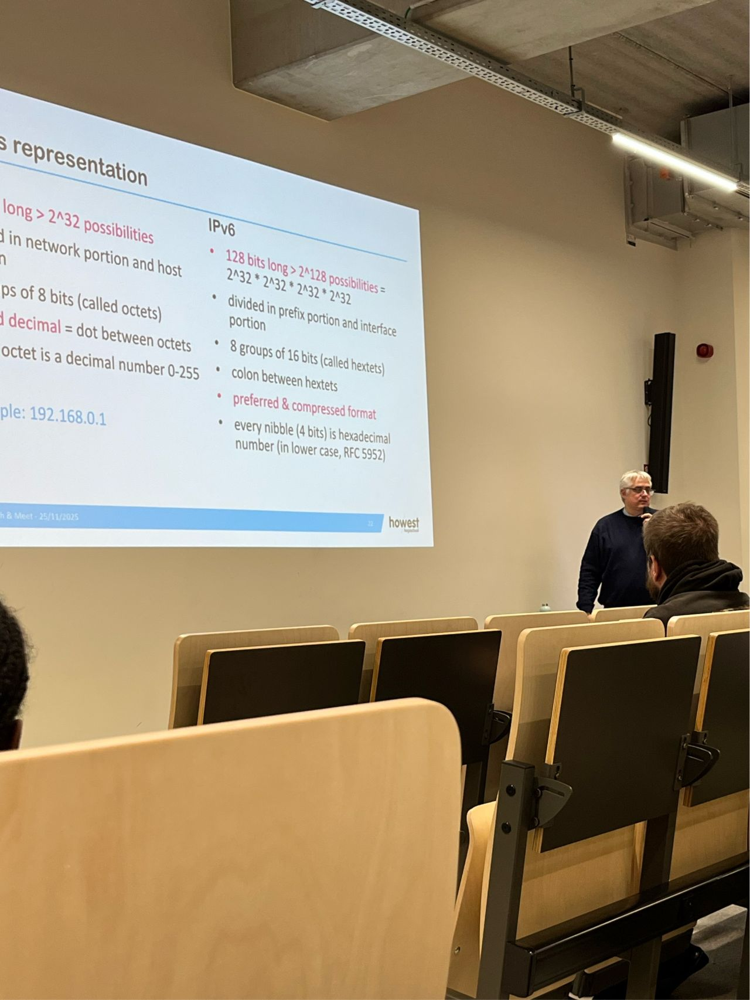

Event type: Tech & Meet
Speaker: Nico Declerck
Topic: IPv4, IPv6 and network migration

I attended a Tech & Meet session about the transition from IPv4 to IPv6, presented by Nico Declerck. The session explained a technical networking topic in a creative and memorable way, using beer analogies to compare the different characteristics of IPv4 and IPv6.
The presentation started by revisiting the history of IPv4 and how NAT allowed IPv4 to survive much longer than originally expected. This helped me understand why the global transition to IPv6 has been slow, even though IPv6 has been necessary for many years.
A key message from the session was that IPv6 can no longer be avoided. The speaker explained the benefits of IPv6-only networks and also discussed practical migration approaches such as Dual Stack and IPv6-mostly environments. This made the topic feel much more realistic because it showed that migration is not just a theoretical concept, but something organisations need to plan carefully.
From a cybersecurity perspective, I found this session especially relevant. Network design has a direct impact on security, visibility and manageability. Understanding IPv6 is important because future networks will increasingly rely on it, and security professionals need to be prepared for that shift.
Overall, the session was both educational and enjoyable. It made a complex networking topic easier to understand and showed me that technical communication can be both clear and creative.